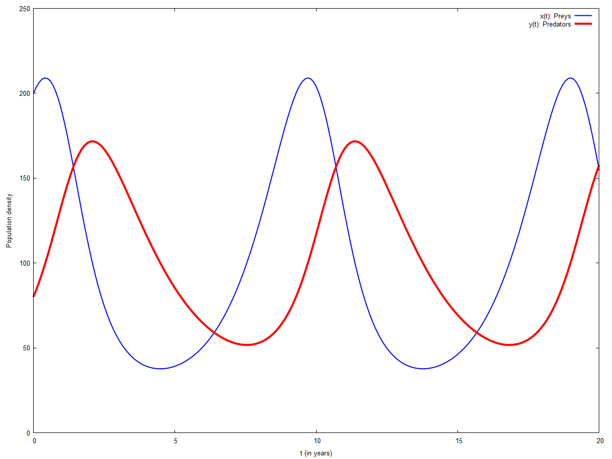
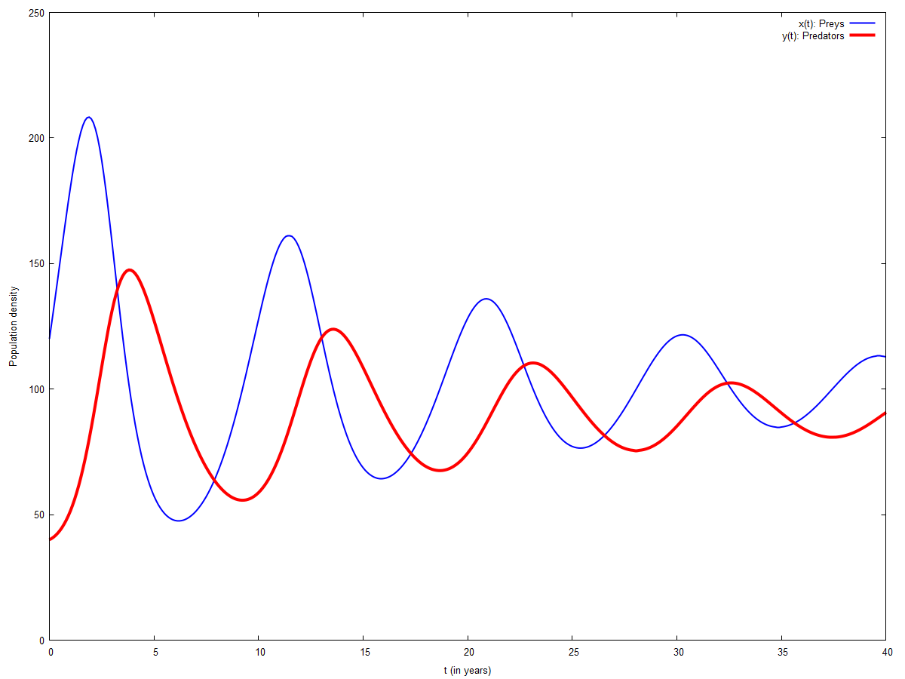
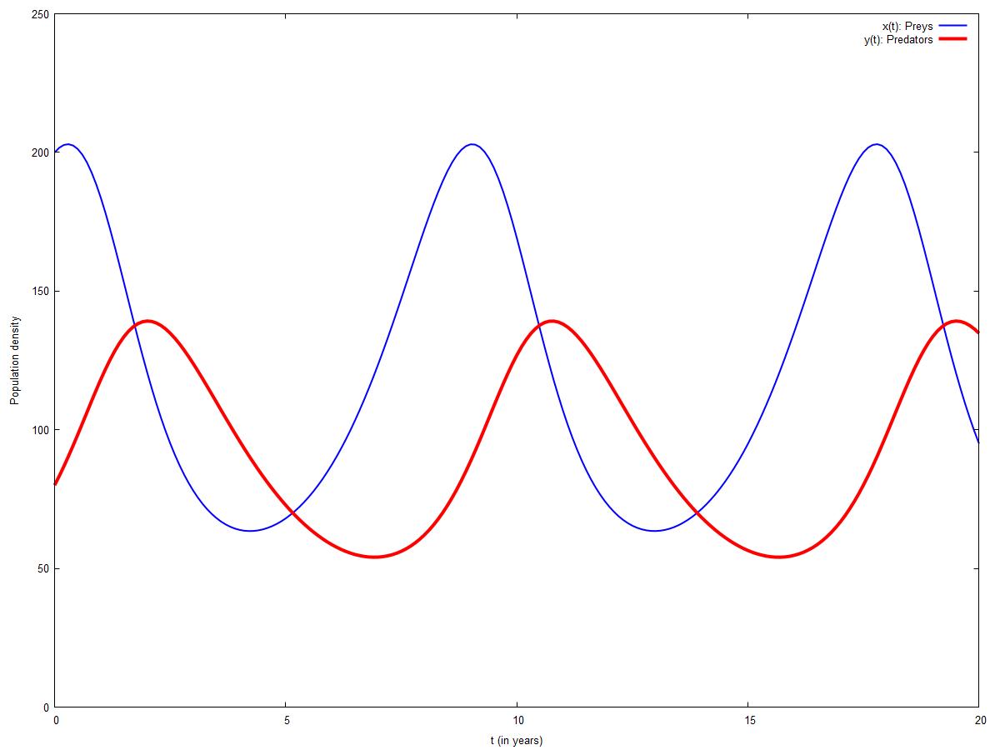
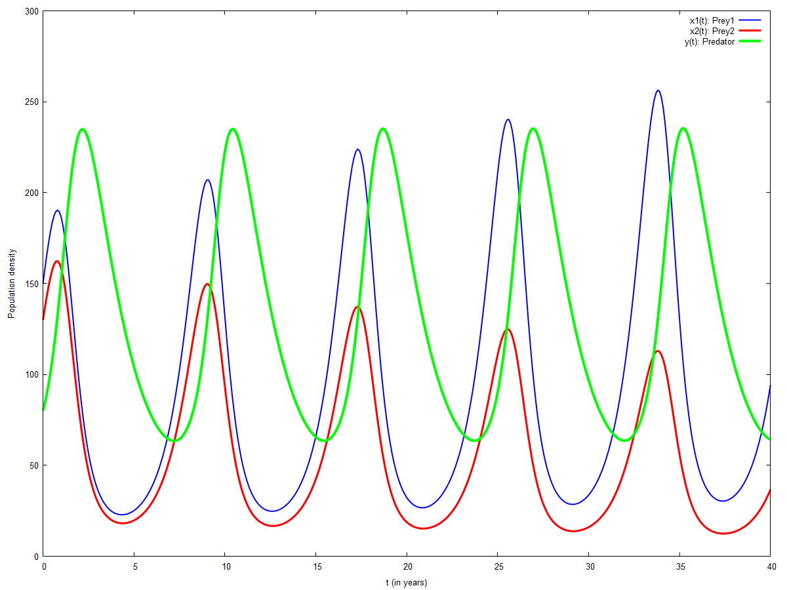

\( \DeclareMathOperator{\abs}{abs} \newcommand{\ensuremath}[1]{\mbox{$#1$}} \)
DSC-VI : Practical-09
Predator-Prey Model
1 Basic Lotka-Volterra Model
| --> |
b1
:
1
.
0
$
a2
:
0
.
5
$
c1
:
0
.
01
$
c2
:
0
.
005
$
eqn1 : ' diff ( x , t ) = b1 · x − c1 · x · y ; eqn2 : ' diff ( y , t ) = c2 · x · y − a2 · y ; pts : rk ( [ rhs ( eqn1 ) , rhs ( eqn2 ) ] , [ x , y ] , [ 200 , 80 ] , [ t , 0 , 20 , . 1 ] ) $ [ % [ 1 ] , last ( % ) , length ( % ) ] ; x_pts : makelist ( [ pts [ i ] [ 1 ] , pts [ i ] [ 2 ] ] , i , 1 , length ( pts ) ) $ [ % [ 1 ] , last ( % ) , length ( % ) ] ; y_pts : makelist ( [ pts [ i ] [ 1 ] , pts [ i ] [ 3 ] ] , i , 1 , length ( pts ) ) $ [ % [ 1 ] , last ( % ) , length ( % ) ] ; wxplot2d ( [ [ discrete , x_pts ] , [ discrete , y_pts ] ] , [ t , 0 , 20 ] , [ y , 0 , 250 ] , [ style , [ lines , 2 ] , [ lines , 4 ] ] , [ xlabel , "t (in years)" ] , [ ylabel , "Population density" ] , [ legend , "x(t): Preys" , "y(t): Predators" ] ) $ |
\[\operatorname{ }\frac{d}{d t} x=1.0 x-0.01 x y\]
\[\operatorname{ }\frac{d}{d t} y=0.005 x y-0.5 y\]
\[\operatorname{ }\left[ \left[ 0.0\operatorname{,}200.0\operatorname{,}80.0\right] \operatorname{,}\left[ 20.0\operatorname{,}154.5921330991444\operatorname{,}157.6845208218405\right] \operatorname{,}201\right] \]
\[\operatorname{ }\left[ \left[ 0.0\operatorname{,}200.0\right] \operatorname{,}\left[ 20.0\operatorname{,}154.5921330991444\right] \operatorname{,}201\right] \]
\[\operatorname{ }\left[ \left[ 0.0\operatorname{,}80.0\right] \operatorname{,}\left[ 20.0\operatorname{,}157.6845208218405\right] \operatorname{,}201\right] \]
\[\operatorname{ }\]
2 Density-Dependent Growth
| --> |
kill
(
all
)
$
b1 : 1 . 0 $ a2 : 0 . 5 $ c1 : 0 . 01 $ c2 : 0 . 005 $ K : 1000 $ eqn1 : ' diff ( x , t ) = b1 · x · ( 1 − x / K ) − c1 · x · y ; eqn2 : ' diff ( y , t ) = c2 · x · y − a2 · y ; pts : rk ( [ rhs ( eqn1 ) , rhs ( eqn2 ) ] , [ x , y ] , [ 120 , 40 ] , [ t , 0 , 40 , . 1 ] ) $ [ % [ 1 ] , last ( % ) , length ( % ) ] ; x_pts : makelist ( [ pts [ i ] [ 1 ] , pts [ i ] [ 2 ] ] , i , 1 , length ( pts ) ) $ [ % [ 1 ] , last ( % ) , length ( % ) ] ; y_pts : makelist ( [ pts [ i ] [ 1 ] , pts [ i ] [ 3 ] ] , i , 1 , length ( pts ) ) $ [ % [ 1 ] , last ( % ) , length ( % ) ] ; wxplot2d ( [ [ discrete , x_pts ] , [ discrete , y_pts ] ] , [ t , 0 , 40 ] , [ y , 0 , 250 ] , [ style , [ lines , 2 ] , [ lines , 4 ] ] , [ xlabel , "t (in years)" ] , [ ylabel , "Population density" ] , [ legend , "x(t): Preys" , "y(t): Predators" ] ) $ |
\[\operatorname{ }\frac{d}{d t} x=1.0 \left( 1-\frac{x}{1000}\right) x-0.01 x y\]
\[\operatorname{ }\frac{d}{d t} y=0.005 x y-0.5 y\]
\[\operatorname{ }\left[ \left[ 0.0\operatorname{,}120.0\operatorname{,}40.0\right] \operatorname{,}\left[ 40.0\operatorname{,}112.8076936975965\operatorname{,}90.67006550194145\right] \operatorname{,}401\right] \]
\[\operatorname{ }\left[ \left[ 0.0\operatorname{,}120.0\right] \operatorname{,}\left[ 40.0\operatorname{,}112.8076936975965\right] \operatorname{,}401\right] \]
\[\operatorname{ }\left[ \left[ 0.0\operatorname{,}40.0\right] \operatorname{,}\left[ 40.0\operatorname{,}90.67006550194145\right] \operatorname{,}401\right] \]
\[\operatorname{ }\]
3 Effect of DDT
| --> |
kill
(
all
)
$
b1 : 1 . 0 $ a2 : 0 . 5 $ c1 : 0 . 01 $ c2 : 0 . 005 $ p1 : 0 . 1 $ p2 : 0 . 1 $ eqn1 : ' diff ( x , t ) = b1 · x − c1 · x · y − p1 · x ; eqn2 : ' diff ( y , t ) = c2 · x · y − a2 · y − p2 · y ; pts : rk ( [ rhs ( eqn1 ) , rhs ( eqn2 ) ] , [ x , y ] , [ 200 , 80 ] , [ t , 0 , 20 , . 1 ] ) $ [ % [ 1 ] , last ( % ) , length ( % ) ] ; x_pts : makelist ( [ pts [ i ] [ 1 ] , pts [ i ] [ 2 ] ] , i , 1 , length ( pts ) ) $ [ % [ 1 ] , last ( % ) , length ( % ) ] ; y_pts : makelist ( [ pts [ i ] [ 1 ] , pts [ i ] [ 3 ] ] , i , 1 , length ( pts ) ) $ [ % [ 1 ] , last ( % ) , length ( % ) ] ; wxplot2d ( [ [ discrete , x_pts ] , [ discrete , y_pts ] ] , [ t , 0 , 20 ] , [ y , 0 , 250 ] , [ style , [ lines , 2 ] , [ lines , 4 ] ] , [ xlabel , "t (in years)" ] , [ ylabel , "Population density" ] , [ legend , "x(t): Preys" , "y(t): Predators" ] ) $ |
\[\operatorname{ }\frac{d}{d t} x=0.9 x-0.01 x y\]
\[\operatorname{ }\frac{d}{d t} y=0.005 x y-0.6 y\]
\[\operatorname{ }\left[ \left[ 0.0\operatorname{,}200.0\operatorname{,}80.0\right] \operatorname{,}\left[ 20.0\operatorname{,}94.9961084048835\operatorname{,}134.7757919917374\right] \operatorname{,}201\right] \]
\[\operatorname{ }\left[ \left[ 0.0\operatorname{,}200.0\right] \operatorname{,}\left[ 20.0\operatorname{,}94.9961084048835\right] \operatorname{,}201\right] \]
\[\operatorname{ }\left[ \left[ 0.0\operatorname{,}80.0\right] \operatorname{,}\left[ 20.0\operatorname{,}134.7757919917374\right] \operatorname{,}201\right] \]
\[\operatorname{ }\]
4 Two Prey and One Predator
| --> |
kill
(
all
)
$
b1 : 1 . 32 $ b2 : 1 . 3 $ a : 0 . 5 $ c1 : 0 . 01 $ c2 : 0 . 01 $ c3 : 0 . 003 $ c4 : 0 . 004 $ eqn1 : ' diff ( x1 , t ) = b1 · x1 − c1 · x1 · y ; eqn2 : ' diff ( x2 , t ) = b2 · x2 − c2 · x2 · y ; eqn3 : ' diff ( y , t ) = c3 · x1 · y + c4 · x2 · y − a · y ; pts : rk ( [ rhs ( eqn1 ) , rhs ( eqn2 ) , rhs ( eqn3 ) ] , [ x1 , x2 , y ] , [ 150 , 130 , 80 ] , [ t , 0 , 40 , . 1 ] ) $ [ % [ 1 ] , last ( % ) , length ( % ) ] ; x1_pts : makelist ( [ pts [ i ] [ 1 ] , pts [ i ] [ 2 ] ] , i , 1 , length ( pts ) ) $ [ % [ 1 ] , last ( % ) , length ( % ) ] ; x2_pts : makelist ( [ pts [ i ] [ 1 ] , pts [ i ] [ 3 ] ] , i , 1 , length ( pts ) ) $ [ % [ 1 ] , last ( % ) , length ( % ) ] ; y_pts : makelist ( [ pts [ i ] [ 1 ] , pts [ i ] [ 4 ] ] , i , 1 , length ( pts ) ) $ [ % [ 1 ] , last ( % ) , length ( % ) ] ; wxplot2d ( [ [ discrete , x1_pts ] , [ discrete , x2_pts ] , [ discrete , y_pts ] ] , [ t , 0 , 40 ] , [ y , 0 , 300 ] , [ style , [ lines , 2 ] , [ lines , 3 ] , [ lines , 4 ] ] , [ xlabel , "t (in years)" ] , [ ylabel , "Population density" ] , [ legend , "x1(t): Prey1" , "x2(t): Prey2" , "y(t): Predator" ] ) $ |
\[\operatorname{ }\frac{d}{d t} \ensuremath{\mathrm{x1}}=1.32 \ensuremath{\mathrm{x1}}-0.01 \ensuremath{\mathrm{x1}} y\]
\[\operatorname{ }\frac{d}{d t} \ensuremath{\mathrm{x2}}=1.3 \ensuremath{\mathrm{x2}}-0.01 \ensuremath{\mathrm{x2}} y\]
\[\operatorname{ }\frac{d}{d t} y=0.004 \ensuremath{\mathrm{x2}} y+0.003 \ensuremath{\mathrm{x1}} y-0.5 y\]
\[\operatorname{ }\left[ \left[ 0.0\operatorname{,}150.0\operatorname{,}130.0\operatorname{,}80.0\right] \operatorname{,}\left[ 40.0\operatorname{,}94.32633644255458\operatorname{,}36.73244132377353\operatorname{,}64.13219452304699\right] \operatorname{,}401\right] \]
\[\operatorname{ }\left[ \left[ 0.0\operatorname{,}150.0\right] \operatorname{,}\left[ 40.0\operatorname{,}94.32633644255458\right] \operatorname{,}401\right] \]
\[\operatorname{ }\left[ \left[ 0.0\operatorname{,}130.0\right] \operatorname{,}\left[ 40.0\operatorname{,}36.73244132377353\right] \operatorname{,}401\right] \]
\[\operatorname{ }\left[ \left[ 0.0\operatorname{,}80.0\right] \operatorname{,}\left[ 40.0\operatorname{,}64.13219452304699\right] \operatorname{,}401\right] \]
\[\operatorname{ }\]
Created with wxMaxima.
The source of this Maxima session can be downloaded here.